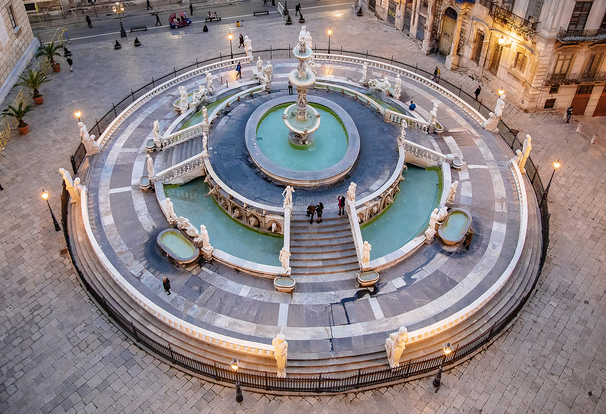

Informazioni
Piazza Pretoria è uno degli angoli più scenografici di Palermo, celebre per la sua monumentale Fontana Pretoria, un capolavoro del Cinquecento ricco di statue e dettagli scultorei. La piazza si trova nel cuore del centro storico, tra i Quattro Canti e Piazza Bellini, ed è circondata da edifici storici come Palazzo Pretorio e il Palazzo delle Aquile. La sua atmosfera elegante e luminosa, unita alla ricchezza artistica della fontana, la rende una delle piazze più fotografate e visitate della città.

Attività
• Visite guidate e percorsi artistici: la piazza è tappa
fissa nei tour del centro storico, soprattutto per la Fontana
Pretoria e i palazzi circostanti.
• Eventi culturali: durante manifestazioni
come Le Vie dei Tesori, la piazza diventa punto di partenza per aperture
straordinarie e iniziative culturali.
• Fotografia e passeggiate:
la fontana, con le sue statue e la luce che la avvolge, è uno dei soggetti
preferiti da fotografi e visitatori.
• Atmosfera serale: la piazza è
particolarmente suggestiva al tramonto e nelle ore serali, quando
l’illuminazione mette in risalto i dettagli della fontana.